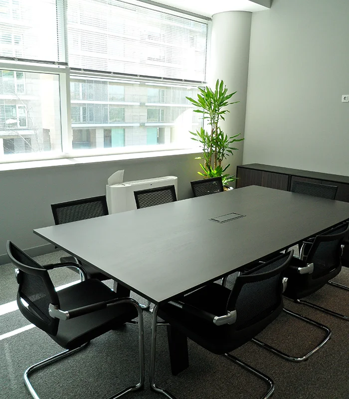
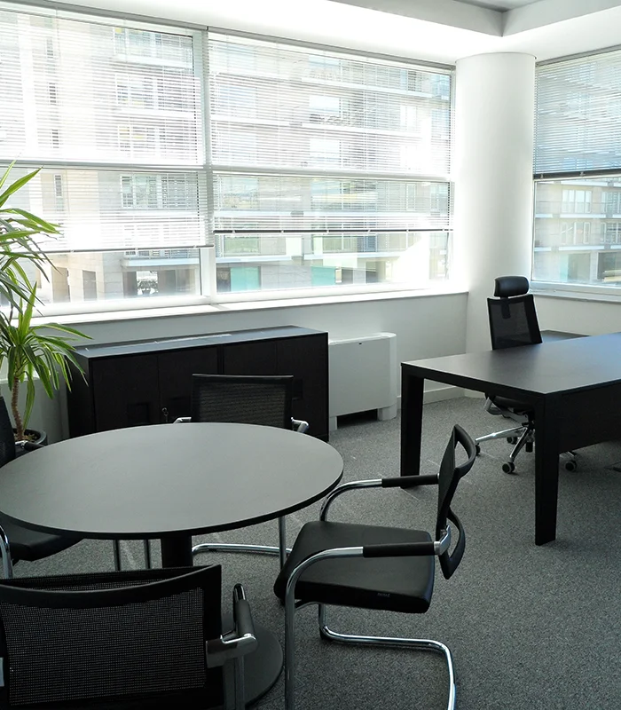
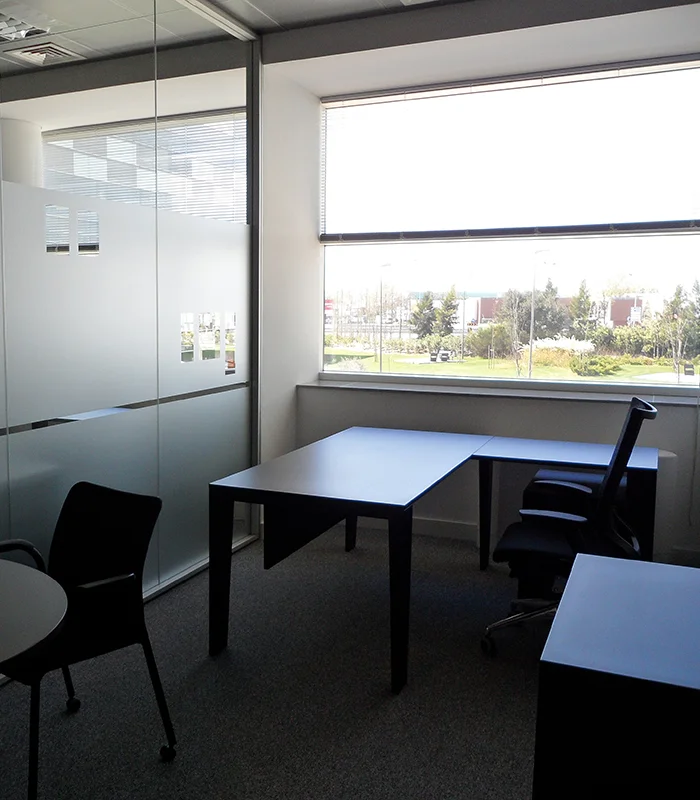
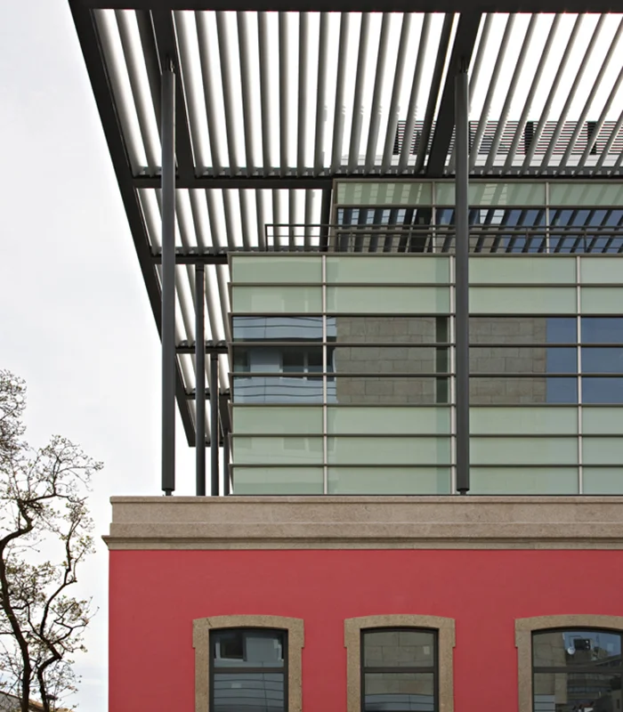

Dar contexto às fotografias.
Separei os exemplos de interiores e exteriores, mantendo a identificação do portefólio. Uma imagem ajuda a situar a conversa sem ser apresentada como uma solução aplicável a qualquer espaço.
Projetos · Interiores · Exteriores
Construção, remodelação e recuperação de espaços. Comece por explicar o que pretende fazer e aquilo que quer conservar.
Organizar as suas prioridadesUma primeira conversa começa pelo espaço e por quem o vai utilizar.

Portefólio EcoObras
O site da EcoObras apresenta projetos, remodelação de interiores e recuperação de exteriores. Dois exemplos do portefólio publicado ajudam a dar contexto a essas áreas.


Fitout · imagens da mesma categoria do portefólio oficial.

Recuperação · imagem do portefólio oficial.
Antes de escolher os acabamentos
Separe o contexto da intervenção das suas prioridades. Este quadro ajuda a organizar ideias para uma conversa real com a equipa.
Demonstração local · sem envioA proposta · Ricardo Almeida
Já mostram espaços e áreas de intervenção no vosso site. Nesta proposta, dei às fotografias uma função no percurso: situar o tipo de trabalho e ajudar a pessoa a explicar aquilo que pretende mudar.
Experimentar o percursoSeparei os exemplos de interiores e exteriores, mantendo a identificação do portefólio. Uma imagem ajuda a situar a conversa sem ser apresentada como uma solução aplicável a qualquer espaço.
O quadro convida a explicar a utilização, a circulação e o que deve ficar. Essas prioridades podem vir antes de uma lista de materiais, sem antecipar decisões que precisam de análise.
O visitante pode experimentar e rever os pontos que quer esclarecer. Numa versão final, o resumo poderia acompanhar o vosso processo de contacto; aqui permanece apenas no dispositivo.
Uma filmagem a preparar convosco
Proponho filmar uma intervenção que possam divulgar, acompanhando a equipa numa decisão concreta: a preparação de uma divisão, a posição de uma divisória ou a execução de um acabamento. Junto da fotografia do espaço, uma explicação curta pode mostrar o que foi escolhido e porquê. A intervenção, os participantes e os limites de divulgação seriam definidos convosco.
Na Canvas Custom Furniture, fiz a filmagem, a edição e a integração do filme no website. O visitante pode ver a execução para além de ler a apresentação da empresa.
Ver o projeto CanvasGostava de perceber que trabalhos querem destacar e como recebem os pedidos hoje.